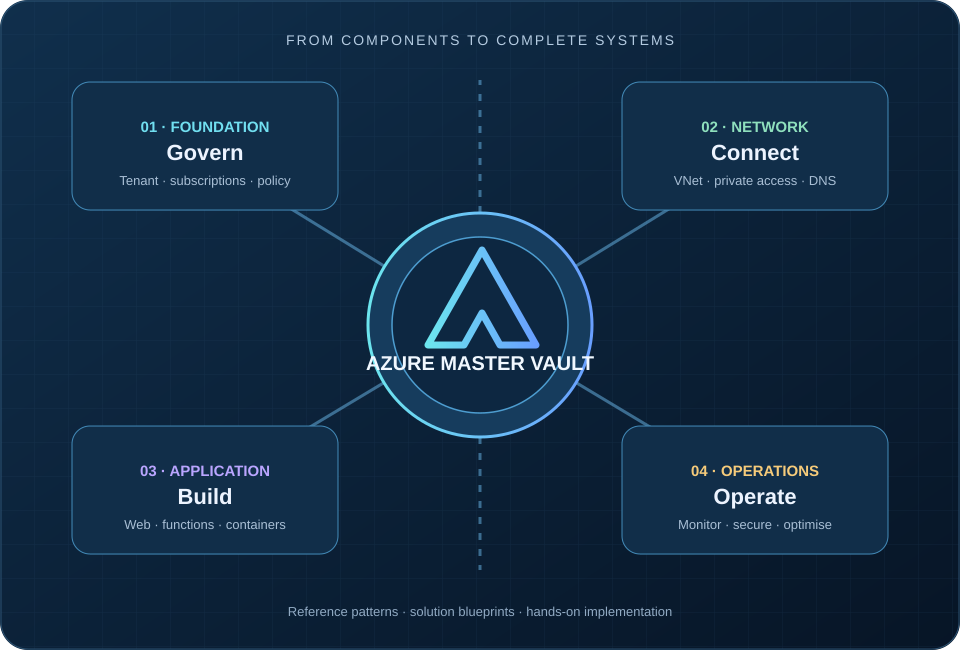
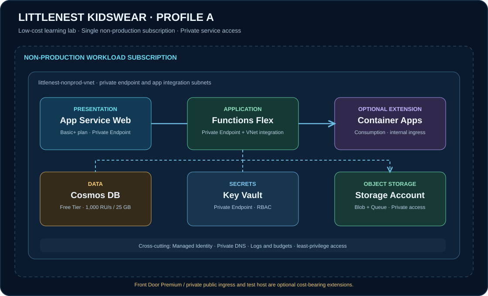

Understand Azure.
Design the system.
Build with confidence.
Explore Azure components, connect them into enterprise architecture patterns, and follow hands-on implementation paths — from your first Azure CLI login to a complete workload blueprint.

Explore the Azure Vault
The existing component catalogue remains the single source for service-level knowledge. The architecture hub connects components without duplicating their definitions.
Cloud foundation
Tenants, management groups, subscriptions, resource groups, policy and landing zones.
Explore foundation →Identity & access
Entra ID, managed identities, RBAC, Conditional Access and privileged access.
Explore identity →Networking
VNets, subnets, peering, routing, private endpoints and private DNS.
Explore networking →Compute & hosting
Virtual machines, App Service, Functions and application hosting choices.
Explore compute →Containers
Container Apps, ACR, AKS and container deployment patterns.
Explore containers →Data platforms
Cosmos DB, Azure SQL, storage and data platform architecture.
Explore data →Browse the existing SVG and editable draw.io visual library →
Solution architecture blueprints
Each blueprint explains the business scenario, architecture, service choices, identity, network, deployment, operations and cost trade-offs.
LittleNest Kidswear
E-commerce reference solution
A non-production learning implementation for a children's clothing store. Explore a private App Service origin, Azure Functions Flex Consumption, Cosmos DB Free Tier, private Storage, Key Vault and managed identity.

Cost and scope: Profile A is a non-production lab, not a production deployment. Private Endpoints, an App Service plan that supports private networking, Container Apps networking and optional public edge services can introduce recurring charges. The guide separates default resources from optional cost-bearing extensions.
Connect to the right Azure subscription
Authenticate locally, inspect the tenant and subscription, then pass the selected subscription ID explicitly to infrastructure tooling.
az login
az account list --output table
az account set --subscription "<subscription-id>"
az account show --query "{tenant:tenantId,subscription:id,name:name,user:user.name}" --output table
terraform init
terraform fmt -check
terraform validate
terraform plan -var "subscription_id=<subscription-id>"Open the full setup, access and troubleshooting guide →
Never run Terraform apply until you have checked the active tenant, subscription ID, permissions, plan output and expected cost. Do not commit tfvars, plan files, state files or credentials.
One source of truth. Multiple architecture views.
Service knowledge is maintained once, then reused by foundation designs, architecture patterns, industry solutions and implementation labs.
Service purpose, capabilities, constraints and alternatives.
Tenant, management groups, subscriptions, identity and policy.
Network, security, data, integration and application patterns.
Complete scenarios, code, deployment, operations and cost.